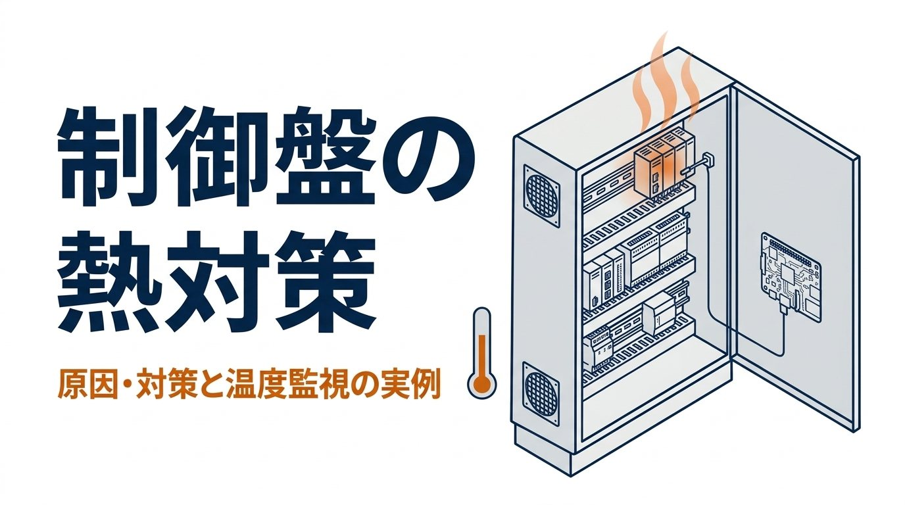
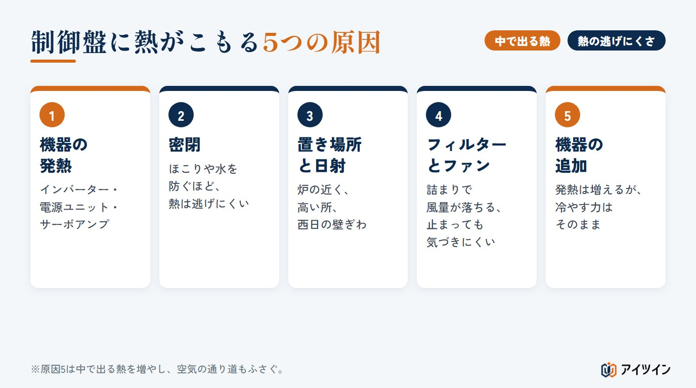
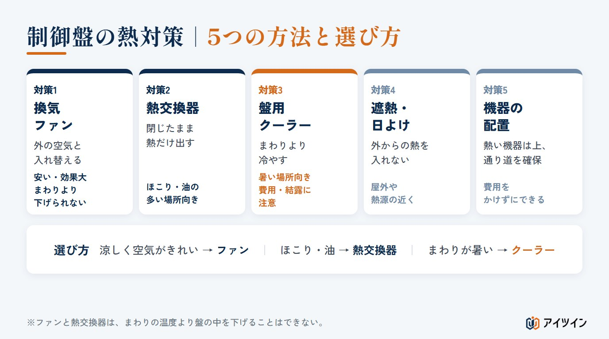
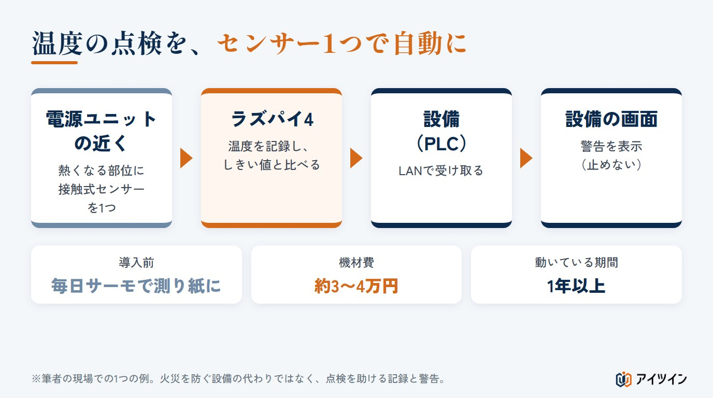

「夏になると制御盤の中が熱くなり、機器の調子が悪い」「ファンを付けたが、本当に効いているのか分からない」。制御盤の熱は、設備が止まる原因になるのに、ふだんは目に見えません。
本記事では、制御盤の熱対策を、温度が上がる原因、5つの対策の方法と選び方の順に整理します。発熱量から盤の中の温度上昇と換気の量を概算できるツールも付けました。後半では、毎日サーモグラフィで測っていた点検を、温度センサー1つと小さなコンピューター（ラズパイ）で自動にした実例をご紹介します。
この記事でわかること
- 制御盤の温度が上がると起きることと、熱がこもる5つの原因
- 換気ファン・熱交換器・盤用クーラーなど、5つの熱対策と選び方
- 発熱量から、盤の中の温度上昇と換気の量を概算する方法（計算ツールつき）
- 熱対策がうまくいかない理由と、温度を測って確かめる考え方
- 温度の点検を、約3〜4万円の機材で自動にした実例と、自分で作るときの注意
制御盤の温度が上がると起きること
制御盤の中には、PLC、電源ユニット、インバーター、リレーなど、電気を使えば必ず熱を出す機器が並んでいます。扉を閉めた箱の中では、その熱が逃げにくく、温度は少しずつ上がっていきます。
部品の寿命が縮む
電子部品は、使う温度が高いほど早く傷みます。特に電源ユニットなどに使われるアルミ電解コンデンサは、寿命の見積もりに「温度が10℃上がると寿命がおよそ半分になる」という目安（10℃2倍則）がよく使われます。実際の寿命は、部品の仕様や電圧、使う時間などで変わりますが、熱はすぐに壊れなくても、交換の時期を早めます。
誤動作や、突然の停止につながる
機器には、それぞれ使ってよい温度の範囲が決まっています。範囲を超えると、保護の働きで止まったり、信号が不安定になったりすることがあります。夏の午後だけ設備が止まる、という困りごとの裏に、盤の中の温度が隠れていることは少なくありません。
熱いのは盤全体ではなく、一部分のことが多い
温かい空気は上にたまり、発熱の大きい機器のまわりは、盤の平均よりも高くなります。盤の中の温度は場所によって大きく違うため、どこを測るかが大切です。
機器ごとに使ってよい温度の範囲は、取扱説明書の「使用周囲温度」などの項目に書かれています。盤の中で一番熱に弱い機器と、その機器のまわりの温度を比べることが、熱対策を考える出発点になります。
この章のまとめ
- 扉を閉めた盤の中は、機器の熱で少しずつ温度が上がる
- 温度が高いと部品の寿命が縮み、誤動作や停止につながる
- 熱いのは一部分のことが多く、どこを測るかが大切
制御盤に熱がこもる5つの原因

原因1：中の機器の発熱
インバーターや電源ユニット、サーボアンプは、発熱の大きい機器です。発熱量は、取扱説明書や技術資料の「発熱量」や「損失」の欄で確かめ、合計すると盤の中で出る熱の量が分かります。消費電力や定格出力を、そのまま発熱量として使わないように気をつけます。
原因2：ほこりや水を防ぐための密閉
ほこりや水が入らないように閉じた盤ほど、熱は逃げにくくなります。守ることと冷やすことは、もともと反対の向きの働きです。
原因3：置き場所と日射
炉や乾燥機の近く、天井近くの高い場所、西日の当たる壁ぎわなど、まわりが暑い所に置いた盤は、中の温度も高くなります。屋外の盤では、日射で表面が熱くなります。工場の中の温度は、床の近くと天井の近くで大きく違うことがあるため、盤のまわりの温度は盤の高さで測ります。
原因4：フィルターの詰まりと、ファンの停止
換気ファンが付いていても、フィルターがほこりで詰まると風量は落ちます。ファンそのものが止まっていても、外からは気づきにくいものです。
原因5：あとからの機器の追加
作ったときは問題がなかった盤でも、改造で機器を足すと、発熱は増えるのに冷やす力は同じままです。空きスペースに機器を詰め込むと、空気の通り道もふさがります。
この章のまとめ
- 原因は「中で出る熱」と「熱の逃げにくさ」に分けて考える
- 密閉・置き場所・日射・フィルターの詰まりで、熱は逃げにくくなる
- あとからの機器の追加は、発熱だけが増える
制御盤の熱対策｜5つの方法と選び方

対策1：換気ファン｜外の空気と入れ替える
盤の下から外の空気を入れ、上から温かい空気を出します。費用が安く、効果も大きい方法です。ただし、まわりの空気より冷たくはできません。ほこりや油の多い場所では、フィルターがすぐに詰まり、盤の中も汚れます。
対策2：熱交換器｜盤を閉じたまま熱だけを出す
盤の中と外の空気を混ぜずに、熱だけを外へ移します。ほこりや油の多い場所に向いています。換気ファンと同じく、まわりの温度より下げることはできません。
対策3：盤用クーラー｜まわりより冷やす
まわりの温度が盤の中の上限に近い、または超える場所では、冷やす機器が必要です。費用と保守の手間は大きくなります。また、盤の中を外より冷やすため、湿った空気が入ると結露することがあります。設定温度を必要以上に下げない、扉の開け閉めを減らす、排水の処理を確かめる、といった点に気をつけます。
対策4・5：遮熱・日よけと、機器の配置
日射や近くの熱源からの熱は、遮熱材や日よけで入りにくくします。また、発熱の大きい機器は、メーカーが指定する取り付けの向きと、まわりの空きを守る。熱に弱い機器には、ほかの機器の排熱が直接当たらないようにする。配線や仕切りで空気の通り道をふさがない。こうした配置の工夫は、費用をかけずにできる対策です。
付けたあとの手入れ｜フィルターの掃除とファンの確認
どの対策も、付けたあとの手入れで効き目が変わります。換気ファンや熱交換器のフィルターは、ほこりの多い場所ほど早く詰まるため、点検の項目に入れて定期的に掃除や交換をします。ファンが回っているか、盤用クーラーの排水や設定温度が合っているかも、季節の変わり目に確かめておくと、夏の困りごとを減らせます。
選び方｜まわりの温度と、ほこり・油で決まる
まわりの温度が盤の中の上限より十分に低く、空気がきれいなら換気ファン。ほこりや油が多いなら熱交換器。まわりの温度が上限に近い、または上回るなら盤用クーラー。外の空気で冷やせるかどうかが、最初の分かれ道です。
この章のまとめ
- 換気ファン・熱交換器は、まわりの温度より下げられない
- まわりが暑い場所では、盤用クーラーなど冷やす機器が必要
- 配置の工夫と遮熱は、費用をかけずにできる対策
発熱量から、温度上昇と換気の量を概算する
計算の考え方｜表面から逃げる熱と、換気で出す熱
盤の中で出た熱は、まず盤の表面から外へ逃げます。逃げる量は「表面積 × 温度差 × 熱の逃げやすさ」で決まります。鉄の盤の熱の逃げやすさは5〜6W/(m²・K)ほどとされ、本記事では中間の5.5W/(m²・K)で概算します。表面積は、熱を逃がせる面だけを数えます。床に接する底面は数えず、壁につけた盤では背面も除きます。表面だけで逃がしきれない分を、換気ファンで外へ出します。必要な風量は「3.1 × ファンで出す熱(W) ÷ 温度差」（m³/h）で概算できます。
自分の盤で試す｜温度上昇と換気量の概算ツール
機器の発熱量は、取扱説明書の「発熱量」や「損失」の欄で確かめます。インバーターやサーボアンプは、動かし方によって発熱が変わるため、よく使う運転での値を目安にします。盤の外寸と、中の機器の発熱量の合計を入れてください。はじめは、幅600×高さ1800×奥行400mmの盤を壁ぎわに置き、発熱量300W、夏のまわりの温度35℃、盤の中の上限40℃とした例です。
制御盤の温度上昇と、必要な換気量の概算ツール
盤の外寸と、中の機器の発熱量の合計（W）から、扉を閉めた盤の中の温度がどれだけ上がるかと、上限の温度に収めるための換気ファンの風量の目安を出します。盤の表面からの放熱は「熱の逃げやすさ 5.5W/(m²・K) × 表面積 × 温度差」、換気の風量は「3.1 × ファンで逃がす熱(W) ÷ 温度差」（m³/h）という、盤の熱計算で広く使われる概算式です。表面積は、底面を除き、置き方に応じて壁でふさがる面も除いて数えます。結果は目安です。盤の中の空気の流れ、日射、機器ごとの使用温度は含めていません。出てくる風量は必要な風量の目安で、フィルターや盤の中の抵抗でファンの風量は落ちるため、ファンは風量の特性を見て余裕を持たせて選びます。機器の選定は、各機器の取扱説明書と、盤や冷却機器の専門の会社の計算で確かめてください。
盤の置き方（熱を逃がせる面の数が変わります）
結果
| 熱を逃がせる表面積 | m² |
|---|---|
| 換気なしの温度上昇 | ℃ |
| 換気なしの盤の中の温度 | ℃ |
| 必要な換気ファンの風量（目安） | |
| 向いている対策の方向 |
この例では、前面・左右の側面・天面の表面積2.76m²から、換気をしないと盤の中は約55℃になり、上限の40℃に収めるには、毎時およそ140m³の換気が必要という計算になります。ただし、これは必要な風量の目安です。フィルターや盤の中の抵抗で、ファンの風量はカタログの最大値より落ちるため、実際の選定では、ファンの風量の特性を見て余裕を持たせます（最大風量を計算値の2倍ほどにする例もあります）。また、計算で分かるのは盤の中の平均の温度です。次の章で見るように、実際に困るのは、平均ではなく一部分の熱さです。
この章のまとめ
- 熱は盤の表面から逃げ、足りない分を換気や冷却で出す
- 発熱量・表面積・温度差から、温度上昇と換気の量を概算できる
- 計算で分かるのは平均の温度。一部分の熱さは測らないと分からない
熱対策がうまくいかない3つの理由
ファンやクーラーを付けたのに、夏になると「盤が熱い」「クーラーが効かない」という声が上がる。そうした現場には、共通する理由があります。
理由1：対策が効いているかを、確かめていない
付けたファンが本当に回っているか、フィルターは詰まっていないか、クーラーの設定は合っているか。対策は、付けたあとの温度を見て初めて、効いているかどうかが分かります。付ける前と後の温度を比べられる記録がなければ、効いたかどうかは感覚でしか話せません。
理由2：熱いのは一部分なのに、全体で考えている
盤の平均の温度が下がっても、発熱の大きい機器のすぐそばは熱いままのことがあります。困っているのがその一部分なら、盤全体を冷やすより、その部分を測り、空気の流れを変えるほうが効くこともあります。
理由3：点検は1日1回でも、温度は1日中変わる
毎日の点検で温度を測っていても、それは測ったときの1回の値です。温度は、時間帯、設備の動き、季節で変わります。一番熱い時間帯は、点検の時間とずれていることがあるため、記録を続けて初めて見える変化があります。
この章のまとめ
- 対策は、付けたあとの温度を見て初めて効いているかが分かる
- 熱いのが一部分なら、その部分を測って考える
- 1日1回の点検では、一番熱い時間帯を見逃すことがある
実例｜温度の点検を、センサー1つとラズパイで自動にした
ここからは、筆者が保全の現場で実際に作り、使ってきた仕組みの例です。盤全体を冷やす話ではなく、熱くなる一点を測り続けて、点検を楽にするという考え方の例です。

きっかけは、他社の発熱トラブルの水平展開
きっかけは、他社で起きた、制御盤の中の発熱トラブルの事例が水平展開されてきたことでした。同じ種類の電源ユニットを使っている設備があり、その日から、毎日の点検でサーモグラフィを使って温度を測り、紙に記録するようになりました。季節に関係なく、特定の設備で毎日続ける点検です。
構成｜電源ユニットの近くに接触式センサーを1つ
電源ユニットのどこが熱くなるかは、サーモグラフィの点検で分かっていました。そこで、盤全体ではなく、その部位の近くに接触式の温度センサーを1つだけ置き、ラズパイ4で温度を記録するようにしました。決めた温度（しきい値）を超えたら、ラズパイからLANで設備へ知らせ、設備の画面に警告を表示します。設備を止めることはせず、警告の表示だけです。機材費は、ラズパイ4と温度センサーで約3〜4万円でした。
測る一点と、しきい値の決め方
サーモグラフィは、盤の中のどこが熱いかを一度に見られる便利な道具です。一方で、測るのは点検のときだけで、記録は人が書き写します。そこで、サーモグラフィの点検で分かっていた一番熱くなる部位を選び、そこに接触式のセンサーを当てて、常に測るようにしました。サーモグラフィで場所を見つけ、センサーで測り続ける、という役割分担です。ただし、サーモグラフィで見る表面の温度と、接触式のセンサーで測る温度は、取り付け方や当たり方で同じにはなりません。取り付けたあと、しばらくは両方の値を見比べて、センサーの値の傾向をつかみます。
警告を出す温度（しきい値）は、機器の使ってよい温度の範囲と、それまでの点検の記録を見て、余裕を持たせて決めます。最初から完璧な値を決める必要はありません。記録がたまってから、ふだんの温度の上がり下がりを見て見直します。
なお、センサー1つで分かるのは、取り付けた場所の温度の変わり方です。盤全体の温度や、ほかの機器の熱さまでは分かりません。また、温度を測ることで冷やす力が増えるわけでもありません。この仕組みは、熱くなると分かっている機器を見張り、点検を助けるためのものです。
時間がかかったのは、プログラムより設備とつなぐ所
温度を測って記録するプログラムは、AIを使って約1週間で作れました。時間がかかったのは、設備に警告を出させるための入力の追加と、そのやり方を調べる所で、さらに1〜2週間かかりました。AIで作れるのは仕組みの中身まで。設備とつなぐ所は、設備の仕様を調べ、確かめながら進める必要があります。
AIへの頼み方｜作るものと、作らないものを分けて伝える
AIには、「何をしたいか（熱くなる部位の温度を常に記録したい）」「どうしたいか（しきい値を超えたら設備に知らせたい）」「何がいるか（ラズパイ4、接触式の温度センサー1つ、設備とはLAN）」を分けて伝えました。あわせて、設備を止める働きは作らない、警告を出すだけと最初に伝えておくと、AIの提案もその範囲に収まります。頼み方の型と例は、特集の記事「製造業の生成AIプロンプト例10選」の例7にまとめています。
1年以上動き続け、毎日の手書きの記録がいらなくなった
この仕組みは、1年以上動き続けています。毎日サーモグラフィで測って紙に書いていた記録は、センサーの記録に置き換わりました。温度は点検の時間だけでなく1日中残るため、夏に「暑い」「クーラーの効きが悪い」という声が上がったときも、記録と照らして確かめることもできます。
この章のまとめ
- 他社の発熱トラブルの水平展開で始めた毎日の温度の点検を、自動にした
- 熱くなる部位の近くにセンサー1つ。超えたら設備の画面に警告を表示するだけ
- 機材費は約3〜4万円。時間がかかったのは、設備とつなぐ所
自分で作るときの3つの注意
注意1：警告の表示だけにし、設備を止める判断には使わない
この仕組みは、温度を知らせて点検を助けるものです。設備を止める、動かすといった判断には使いません。設備とLANでつなぐ場合は、どのネットワークに、どうつなぐかを設備の担当者と確かめます。設備のネットワークにそのままつなぐと、通信の行き違いや設定の誤り、通信の増えすぎ、外からの不正な通信などで、設備に影響が出ることがあります。送るデータを必要なものだけにし、通信が切れたときや、おかしな値・古い値を受け取ったときの設備側の動きも決めておきます。ラズパイが止まったときに気づけるようにしておくことも大切です。
注意2：盤の中の作業は、停電と検電をしてから、電気の取り扱いに慣れた人が行う
制御盤を開けてセンサーを取り付ける作業は、感電や短絡（ショート）の危険があります。原則として設備を止めて電源を切り、検電器などで電圧がないことを確かめてから作業します。インバーターなどは、電源を切ったあとも中に電気が残っていることがあるため、取扱説明書の待ち時間を守ります。作業は、設備の安全の手順を理解した、電気の取り扱いに慣れた人が行います。センサーが低い電圧で動くからといって、盤の中の作業が安全になるわけではありません。センサーの線は、ほかの配線や動く部分にかからないようにします。
注意3：火災を防ぐ設備の代わりではない
この仕組みは、温度の変化に早く気づくための点検の手助けです。火災を見つけたり防いだりする設備や、機器そのものの保護の働きの代わりにはなりません。センサーの外れや故障で値が読めないときに気づけるよう、読めない状態も記録と警告に残します。
この章のまとめ
- 警告の表示だけにし、設備とのつなぎ方は担当者と確かめる
- 盤の中の作業は、停電と検電をしてから、慣れた人が行う
- 火災を防ぐ設備の代わりではなく、センサーの故障にも気づけるようにする
アイツインの仕組みづくりの支援
アイツインは、保全の現場での経験をもとに、製造現場の困りごとを、ラズパイとAIで安く解決するお手伝いをしています。
どこを測るか、困っている一点から一緒に考える
盤のどこが、いつ熱くなるのか。今の点検の記録やご要望をうかがい、盤全体を冷やすべきか、一部分を測って確かめるべきかを一緒に整理します。
試作から、設備とのつなぎ方の確認まで
温度の記録と警告の仕組みを試作し、設備とのつなぎ方を担当の方と確かめ、使い始めの二重チェックと、困ったときの手順書づくりまでを支援します。
盤の熱の概算や、設計のご相談も
機器を追加するときの発熱の見積もりや、盤まわりの架台・機構の設計も、同じ窓口でご相談いただけます。冷却機器の選定が必要な場合は、測った温度の記録をもとに、専門の会社へ相談するための条件の整理もお手伝いします。
まとめ
制御盤の熱対策は、まず熱の原因を「中で出る熱」と「逃げにくさ」に分け、まわりの温度とほこりや油の有無で、換気ファン・熱交換器・盤用クーラーを選ぶことから始まります。発熱量が分かれば、温度上昇と換気の量は概算できます。
ただし、計算で分かるのは平均の温度です。実際に困るのは、発熱の大きい機器のまわりや、点検していない時間帯の熱さです。冷やす前に、どこが、いつ、どれだけ熱いのかを測って知ることが、効く熱対策への近道です。毎日の温度の点検が負担になっているなら、熱くなる一点だけを測る仕組みから始めてみてください。
参考
・一般社団法人 日本電機工業会の技術資料（インバータを使用した制御盤の設計。鉄製の箱の熱通過率 5〜6W/(m²・℃)）
・経済産業省「工場システムにおけるサイバー・フィジカル・セキュリティ対策ガイドライン」
・盤の放熱と換気量の式は、制御盤の熱計算で一般に使われる概算式です（熱の逃げやすさ5.5W/(m²・K)、換気の係数3.1）。
・本記事の計算と実例は説明のための目安です。機器の使用温度は各機器の取扱説明書で確かめ、冷却機器の選定は専門の会社にご相談ください。